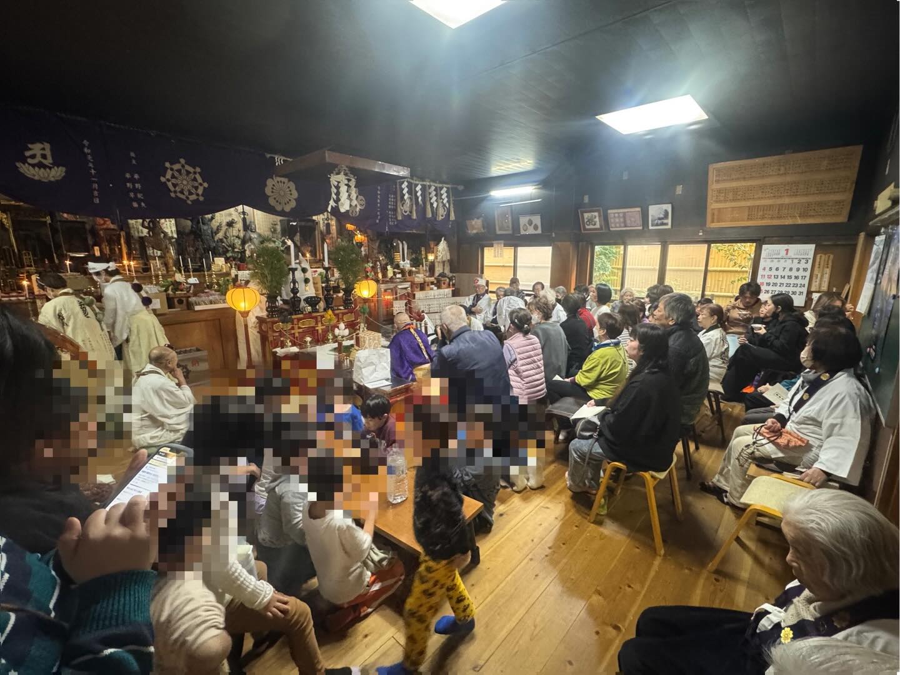
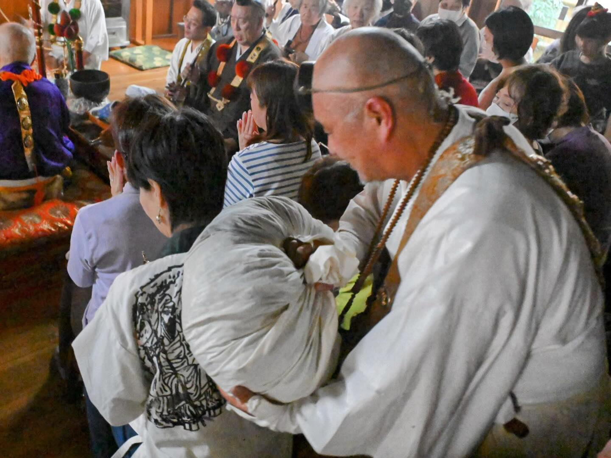
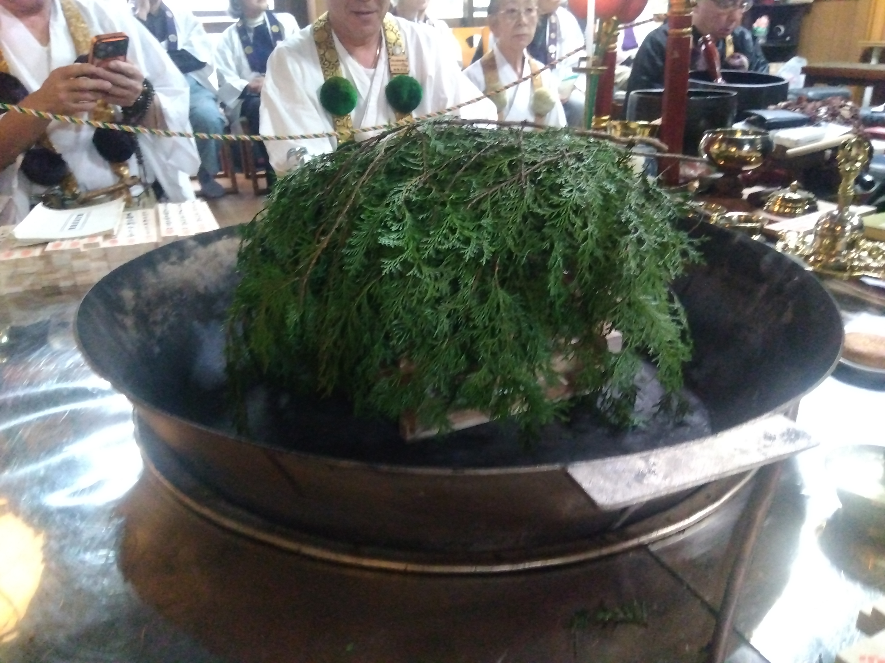
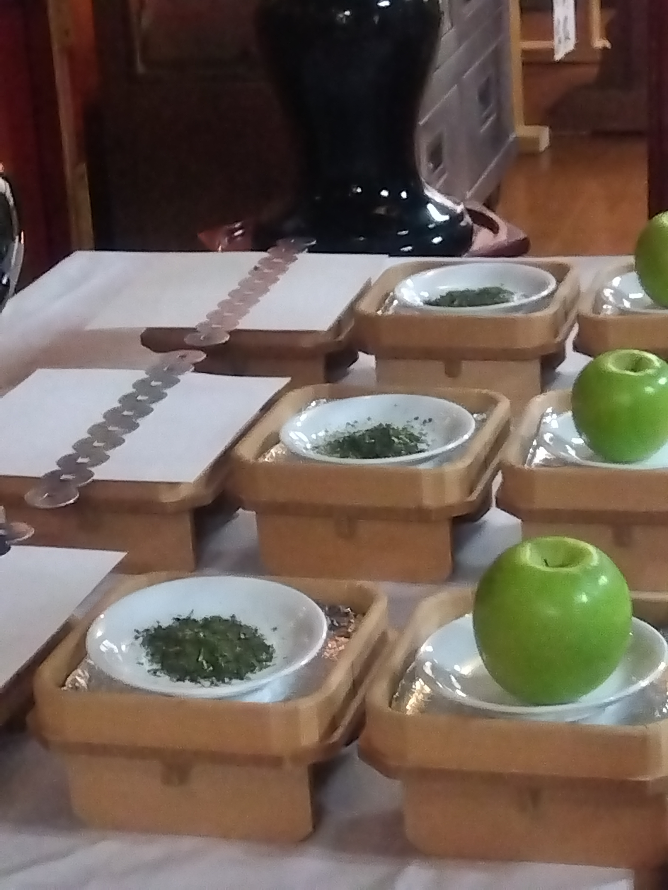
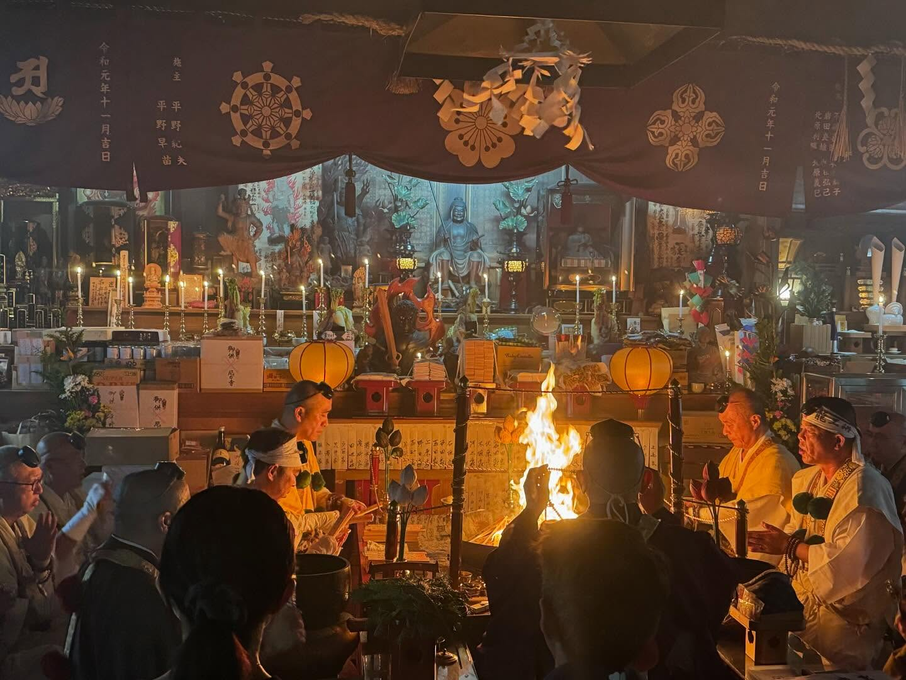
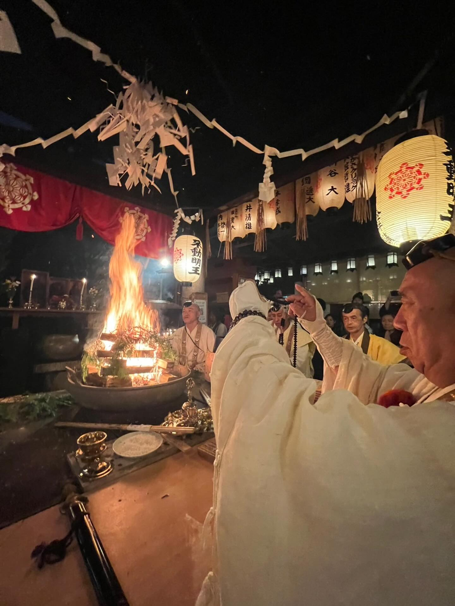
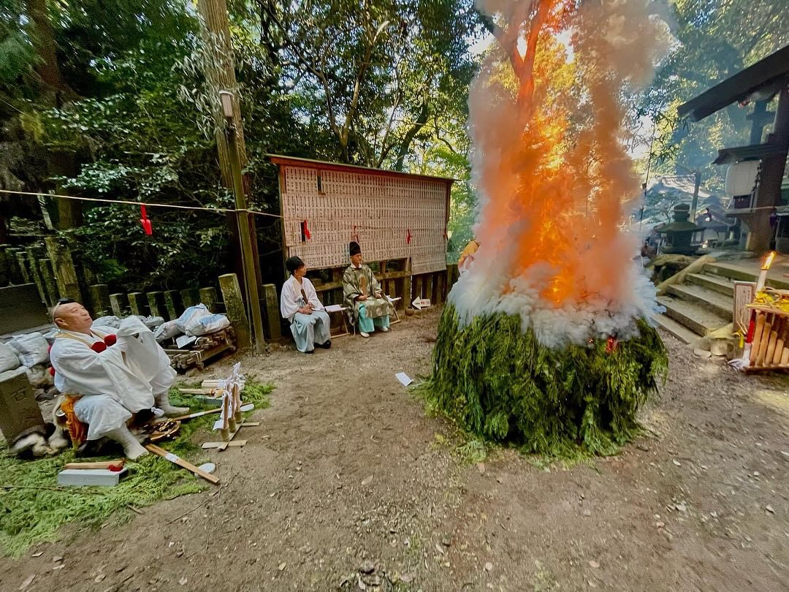

勝妙院について
勝妙院は、奈良・吉野にある修験道の根本道場「櫻本坊」にゆかりを持つ別院として、
1980年3月より大阪市東淀川区相川の地に開かれました。
高野山真言宗、金峯山修験本宗の寺院であり、単立の神社でもあります。
勝妙院について
勝妙院は金峯山修験本宗に属する櫻本坊別院であり、 修験道道場・密教寺院として法務を執り行っております。
ご本尊・主祭神
ご本尊として役行者・不動明王・金剛蔵王大権現をお祀りし、
密教寺院として弘法大師・大日如来等を奉安しております。
主祭神として吉高稲荷大神を奉斎し、
天照大神・御嶽大神等をお祀りしております。
縁起
当院は明治後期、初代高井妙京により御嶽教教会として創建されました。 昭和に入り第二代高井妙龍が教会を拡大し、 第三代高井良徹の代に伏見稲荷大神を主祭神として奉斎しました。
第二次世界大戦後、第三代高井良徹が奈良県吉野山の 大峯山護持院井光山五臺寺櫻本坊に入壇し、 昭和32年に総本山金峯山寺・別格本山櫻本坊により 「宗教法人櫻本坊別院勝妙院」となりました。
現在は第四代高井良勝が住職を務め、 修験道道場として、また密教寺院として法務を執り行っております。
年間行事
- 1月1日 元旦法要（午前0時）
- 1月2日 修正会
- 1月10日 初鳴釜式（鳴動式）
- 1月18日 初柴燈護摩供（風呂敷護摩）
- 2月18日 節分会
- 3月 春季彼岸法要
- 8月 盂蘭盆会
- 8月24日 地蔵盆会
- 9月 秋季彼岸法要
- 11月18日 不動山勝妙院大祭
- 12月10日 納め鳴釜式
- 12月18日 納め柴燈護摩供
毎月10日 午後1時 ：鳴釜式
毎月18日 午後1時 ：護摩供
※本堂で行っております。
開始の１時間ぐらい前にお越しください。
月によって開催時刻が前後する場合がありますので、事前にご確認ください。
1/18 ：初柴燈護摩供（風呂敷護摩）


2/18 ：節分会 星護摩（ほしごま）


11/18 ：不動山勝妙院大祭
写真館
最新の投稿はこちら：
行事の様子



ご祈祷・お供養・お祓いのご案内
家内安全・身体健康・学業成就など、各種ご祈願・ご祈祷を承っております。
家祓い・地鎮祭・厄除けなども、仏式・神式にて承っております。
ご葬儀・年忌法要など各種ご供養も承っております。
※オリジナルTシャツ・腕輪の制作も承っております。お気軽にお問い合わせください。
アクセス
〒533-0007 大阪府大阪市東淀川区相川３丁目２−３
勝妙院
ご連絡・お問合せ
電話：06-6340-3249
受付時間：8:30～16:00
メール：shomyoin@gmail.com
高井 良勝